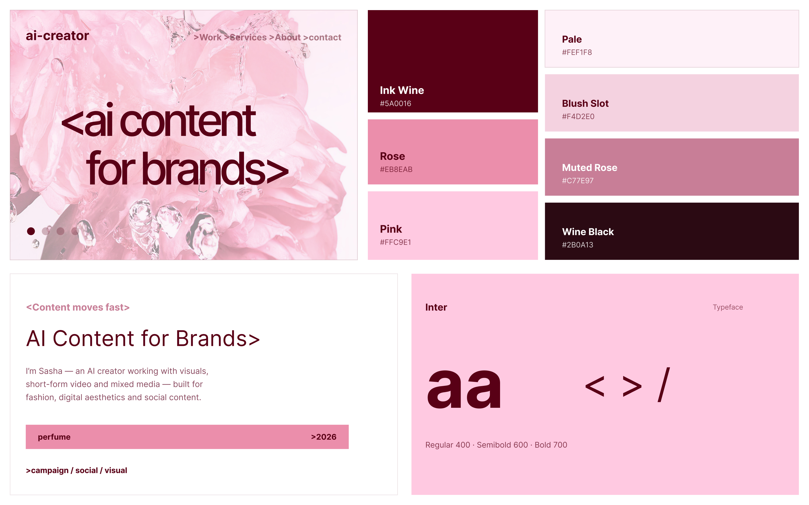
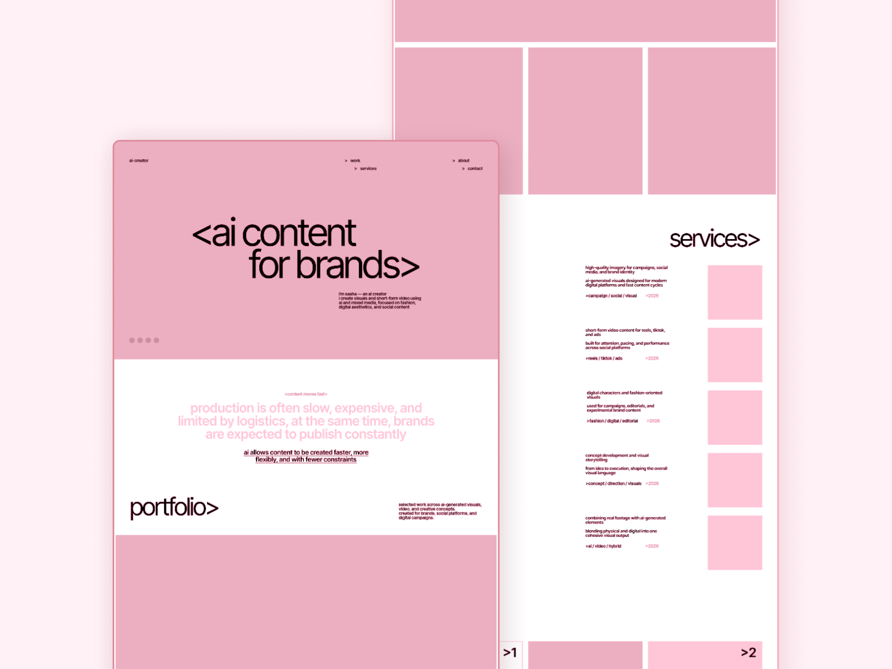
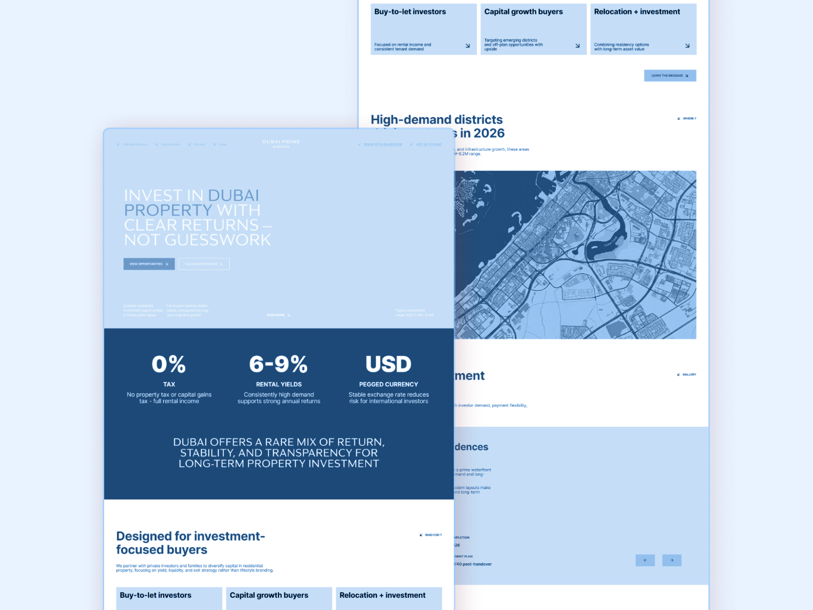
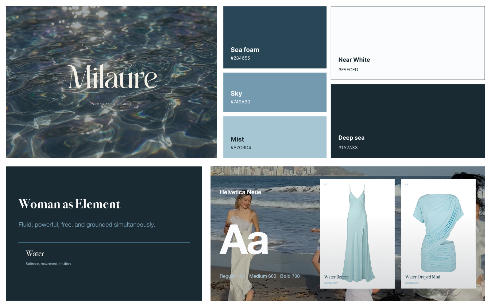
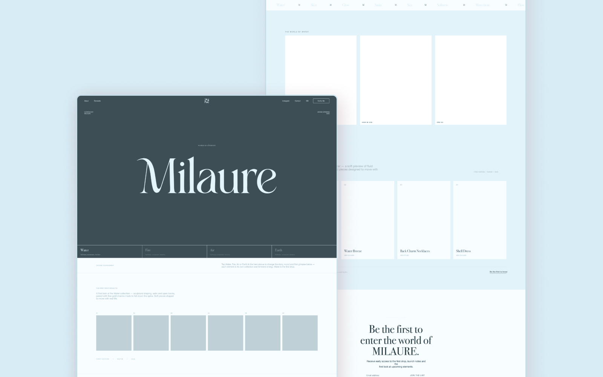

Three brands, three goals.
A curated set of landing pages across AI, real estate and fashion - focused on layout, visual direction, user flow and clear, conversion-led storytelling.
A first digital presence, built from scratch.
A portfolio-style landing page for an AI creator, designed from scratch to create a clear online presence - presenting the creator's work, visual identity and positioning through a structured one-page experience, credible from the first scroll.
creator positioning · portfolio structure · visual storytelling - Figma



Created a focused one-page portfolio presence where the creator's work, identity and services could be presented clearly in one place.
view on behance ↗Built to bring in new client enquiries.
An advertisement landing page for a Dubai-based real estate agency, created to support client acquisition and premium property promotion. Large imagery, editorial spacing and clear CTA blocks build trust quickly and guide users toward enquiry.
luxury positioning · lead generation · property presentation - Figma



The landing page supported the agency's client acquisition and helped bring around 10 additional client leads / enquiries.
A campaign-style page for an upcoming shop.
A pre-launch landing page for MILAURE, designed to introduce the brand, build anticipation and support the upcoming clothing shop launch - fashion-first art direction, editorial typography and a clean commercial structure, guiding visitors from mood to product interest.
brand launch · product storytelling · fashion e-commerce - Figma



Created a brand-led landing page direction to support the upcoming shop launch and introduce MILAURE before the full e-commerce experience.
First impression to action.
Across the three pages, I focused on clear structures that guide users from first impression to action. Each project uses a different visual language, but the core approach stays consistent.
Clear first impression
Each page opens with a strong hero that quickly communicates the product, brand or offer.
Structured storytelling
Content in focused sections so users understand the value without feeling overwhelmed.
Conversion-focused flow
CTA points, page rhythm and simple navigation guide users toward the next action.
Visual direction meeting clear structure.
These projects explore how landing pages can combine atmosphere with function - balancing brand identity, user flow and conversion-focused design.